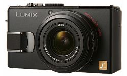
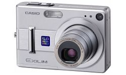
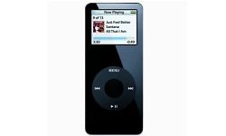
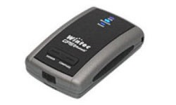
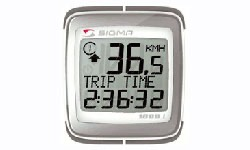
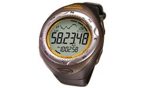
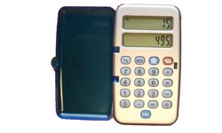

Laptop
CPU : Core2Duo 1.83G Screen : 13.3" RAM: 1GB DDR2 Hard drive : 160G Weight : 2.0kg
Battery: 2x 8cell, shock resistance bag, USB Harddrive (80KB), Charger

Digital Camera
Pixel : 10.0M Display : 2.8" Lens: Leica Storage : SD Weight : 220g
2x bttery, carrying bag, SD card: 3x 1GB, 1x 512MB

Digital Camera (spare)
Pixel : 5.0M Display : 2.5" Lens: Pentax Storage : SD Weight :180g
2x battery.

MP3 player
Color : Black Storage : 4GB
A souvenir from when I worked at an Apple retail store XD. It has Misasa's music.

GPS Recorder
WBT-201, yet to be released for general public. Wintec was kind enough to provide me with one, and will be using it to track all my tracks for this trip.
So I got this small and portable GPS recorder, it's battery efficient, and has a big storage space!

Cycling Computer
Sponsored by Taiwan's Sigma. Considering the battery life, I picked one that still has cords.
I really like Sigma's cycling computer, full of features yet very easy to use. It fits my taste~

Watch
Function: Time, altimeter, thermometer, barometer, weather forcast, compass, stop watch, water proof, EL backlight.

Cellphone, International SIM Card
A random GSM cellphone, because all the international roaming phone charges a lot,
so a Middle-Eastern friend, Fei Fei, gave me a SIM card for Europe, this way it will be free to receive phone calls.
and it's cheap to call me too, about 20 NT per minute.

Currency Converter
A friend gave it to me, Japanese calculator with top and bottom screens, and it can easily be setup to convert currencies.
With it I can figure out how much it really costs in NT, and with so many countries to travel, this way I can stay within budget ~_~